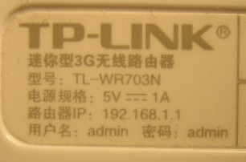
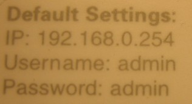
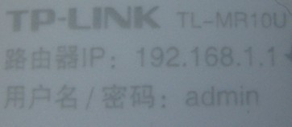

First you need to choose the router model. I have only tried TP-Link TL-WR703N, TL-MR3020 and TL-MR10U models. Here are the specifications of the devices:
If you are installing OpenWrt for the first time you can read instructions from official OpenWrt wiki:
The process is not complicated, just follow these steps:

TP-Link TL-WR703N

TP-Link TL-MR3020

TP-Link TL-MR10U
admin and password admintelnet 192.168.1.1passwd into the prompt. You will be prompted to set a new password for the user root.exit into the prompt.ssh root@192.168.1.1Configure /etc/config/network with an IP address, gateway and DNS servers that allow the device to access the Internet.
For example, you can remove 'wan' interface (wi-fi) and configure 'lan' interface (wired ethernet) to get an IP address from the main home router, use DHCP:
config interface 'loopback'
option ifname 'lo'
option proto 'static'
option ipaddr '127.0.0.1'
option netmask '255.0.0.0'
config interface 'lan'
option ifname 'eth0'
option type 'bridge'
option proto 'dhcp'
Configure /etc/config/system with the time zone, for example:
option timezone MSK-3If you want to reflash OpenWrt:
/tmp directory of the device.Then type in terminal or PuTTY:
cd /tmp
mtd -r write openwrt-ar71xx-generic-tl-mr10u-v1-squashfs-factory.bin firmwareIf you know url of the binary file you can do all this in one step, for example:
cd /tmp
wget http://homewsn.com/firmware/openwrt/openwrt-ar71xx-generic-tl-mr10u-v1-squashfs-factory.bin
mtd -r write openwrt-ar71xx-generic-tl-mr10u-v1-squashfs-factory.bin firmware